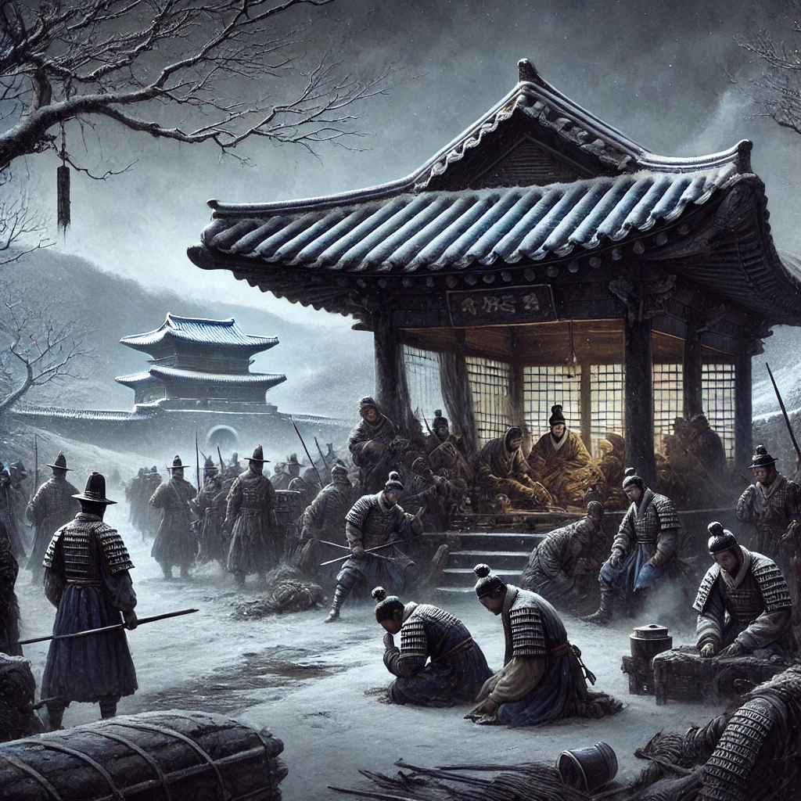

남한산성
목차
작가
김 훈
출판일
2007년
감상평에 대한 AI그림
병자호란 속 조선의 절망과 지도자들의 갈등을 섬세하게 그린 작품. 간결하면서도 강렬한 문체가 역사적 비극의 무게를 더욱 깊이 느끼게 한다.

감상평에 대한 AI 감정 평가
~~~~AI평가~~~~~
✨ 애상적(슬픔, 비극): 조선의 절망과 역사적 비극을 강조
✨ 경외감(존경, 감탄): 작가의 문체와 역사적 고증에 대한 감탄
✨ 진지함(무게감 있는 평가): 작품이 주는 깊은 울림을 담고 있음